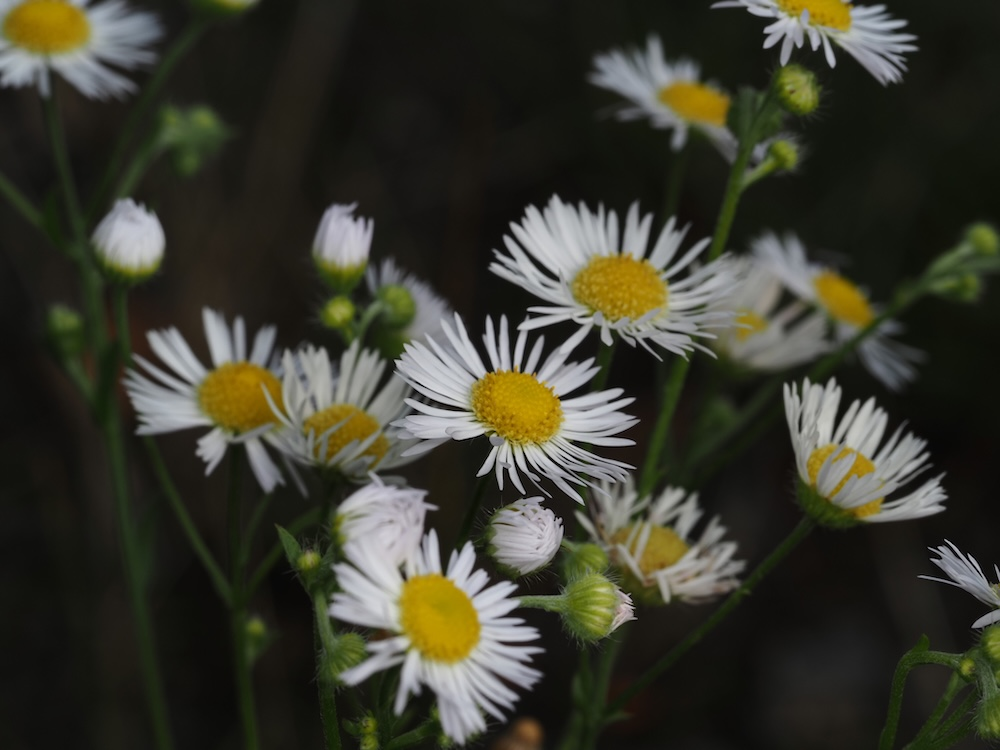
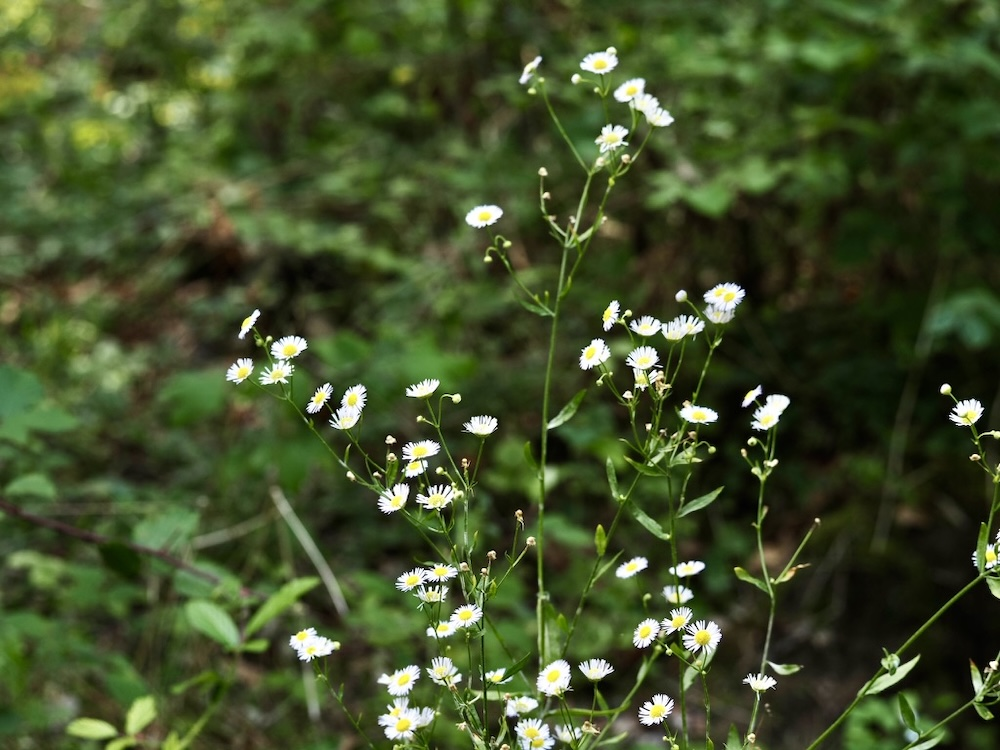

Eine ungebetene amerikanische Schöne
Das Einjährige Berufkraut wurde im 18. Jahrhundert aus Nordamerika eingeschleppt — vermutlich als Zierpflanze in Botanischen Gärten. Es brauchte etwa 200 Jahre, um sich vom Park aus über ganz Mitteleuropa zu verbreiten. Heute findet man es auf fast jeder ungemähten Wiese, an Wegrändern und auf Brachflächen — oft in massenhaften Beständen. Ein Schulbeispiel für einen erfolgreichen Neophyten.
Margeriten-Mimikry
Auf den ersten Blick wirkt es wie eine Margerite: weißes „Strahlenblütchen“, gelbe Mitte. Aber der Trick liegt im Detail — die einzelnen Blütenkörbchen sind viel kleiner (1,5–2 cm) und stehen zu vielen in lockerer Doldentraube. Außerdem haben die Strahlblüten oft einen rosa Schimmer an den Enden. Mit etwas Übung erkennt man den Unterschied auf 5 Meter Entfernung.